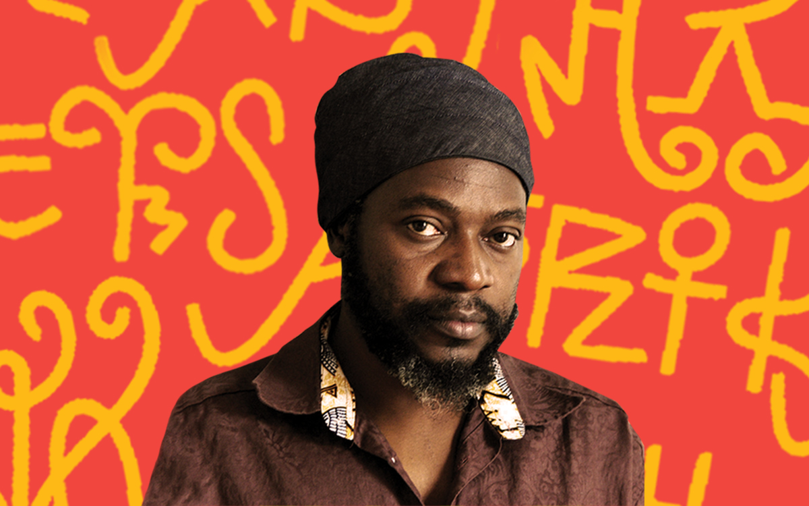

I came to Rhode Island School of Design (RISD) intending to experiment more. My love for letterforms had to take a back seat; however, after a class on typeface design with Richard Lipton, I realized I had missed creating letterforms. Unlike what I used to develop before coming to RISD, LATIN TYPEFACE design is about creating systems of components that seat and make all the characters in the alphabet look like one family. My letterforms, on the other hand, aren't like the Latin characters; they have their own personality as I reference African objects. So, in simple terms, I am exploring, or should I say, learning Latin typeface design.

The TYPOGRAPHICS NY 2024 conference only fueled the fire as I met season-typeface designers like TOBIAS FRERE-JONES. A little background on my practice is that I am interested in ancient African knowledge (we will unpack the term 'ancient' another day). That's where I draw my inspiration from. I have been doing this process since watching Prof Saki Mafundikwa's Tedtalk, Ingenuity and elegance in ancient Afrikan alphabets, which urges young African designers to look inward into Africa for inspiration. That's what I have been doing, looking inward. Prof Saki's call was simple for me: Africa is what I have known since birth.
It's not that I know all of it, but I do know some of it. It was all around me; it was what I saw going to school, and back, how our family interacted with neighbors, how I played with my friends; it was all my memories of Zimbabwe. So, the call to look inward meant observing, questioning, investigating, and researching what I don't know about Africa, and I keep doing it now. Currently, I am trying to create typefaces that celebrate Africa, designed from African artifacts, while researching and developing a WRITING SYSTEM for the Ndebele in Zimbabwe. This sentence is as confusing as it comes. I am still processing everything. However, Prof Saki's call later made me realize that Africa is inside me, and looking inward also involves me creating what I like. I collected these five personal images for my COMPENDIUM last spring and stored them in a folder on my computer. I am inspired by other creatives pushing the boundaries of their art. For instance, ArtcomesFirst, a fashion duo from the United Kingdom, has a presence in the fashion industry in terms of how they create garments and sometimes address societal issues. Plus, how they dress is so cool. They are so true to who they are.
This is an inner goal of mine: to create work that matters or one day leave a legacy. What would they say about my work when I am gone? Am I creating for myself or others? These are some of the questions I ask myself. I usually get motivated when the work is aligned with my core beliefs. SAMUEL ROSS as a graphic designer; however, he has transcended spaces as he is now famously known as a fashion and industrial designer, just like Virgil Abloh. I also don’t want to be just a graphic designer; I have ideas for toys, a stool design, fabric patterns, and so many ideas. DAAN RIETERGEN TYPOGRAPHIC WORK questions whether legibility is important in typeface design, a space I find myself in every time I start designing a typeface.
CHRISTINE ESPINAL'S furniture made me think about all the products I want to make. Even after designing a logo for a client, I usually find myself thinking about how that icon might look like if it was 3D or if it was a furniture piece. Thanks to RISD resources, I was able to take an introduction to FURNITURE DESIGN during the winter session, and I finally got to make my first wooden functioning stool and table designed and made by me. I repeat, designed and made by me. A ground moment for myself as it was the first time working with wood, working with materials. I truly felt like Ross and Abloh breaking the boundaries of what creatives should be.